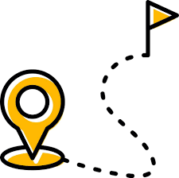

Pontos turísticos
Praias
Hotéis
Restaurantes

Crie sua rota
← Voltar
← Voltar
üó∫Ô∏è Painel de Rotas
▼
üìç Paradas Intermediárias
⚙️ Configurações
üöó De carro
üö∂ A p√©
üìç Tra√ßar Rota
üóëÔ∏è Limpar Rota
üìä Informa√ß√µes da Rota
Destino:
-
Distância:
-
Tempo:
-
Modo:
-
üß≠ Instru√ß√µes de Navega√ß√£o
Carregando...
 Praias
Praias
 Hotéis
Hotéis